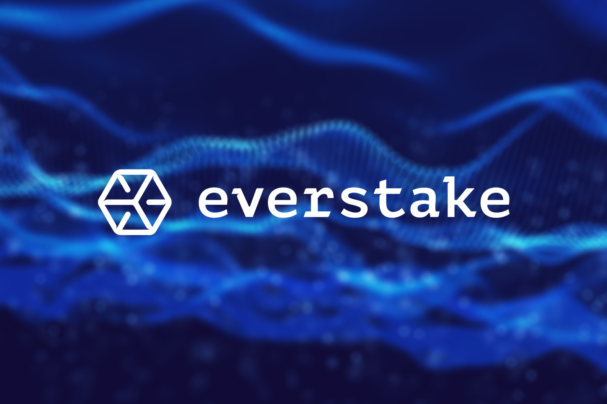

AI Website Software
Everstake is an institutional-grade, non-custodial cryptocurrency staking infrastructure provider. Founded in 2018 by blockchain engineer Sergii Vasylchuk, the platform serves as a foundational validator for the Proof-of-Stake (PoS) ecosystem. It manages over $7 billion in staked digital assets and supports a global user base exceeding 1.6 million delegators.
The platform bridges the gap between complex blockchain DevOps engineering and token holders who want to earn network rewards. Everstake hosts enterprise-grade validator nodes across more than 130 blockchain networks. These include dominant ecosystems like Ethereum, Solana, Cosmos, Aptos, Near, and Sui.
Core Philosophy: Non-Custodial Security
Everstake operates on a strict non-custodial model. This framework ensures that users maintain full, uninterrupted ownership and control of their private keys and digital assets. When a token holder stakes assets using Everstake, they do not transfer funds to the company's balance sheet. Instead, they securely delegate their voting or staking power to an active Everstake validator node.
Because the underlying assets never leave the user's wallet, this approach eliminates counterparty insolvency risk. This distinction is crucial for retail investors and heavily regulated corporate institutions alike.
Institutional Trust and Compliance
Everstake sets itself apart by meeting strict regulatory and internal security standards. It holds five primary institutional-grade certifications:
* SOC 2 Type II: Verifies long-term data security, processing integrity, and operational privacy controls over time.
* ISO/IEC 27001:2022: The international gold standard for robust information security management systems.
* NIST CSF: Adheres directly to the National Institute of Standards and Technology Cybersecurity Framework.
* GDPR & CCPA: Ensures strict compliance with European and California user data privacy mandates.
* ITGC: Validates enterprise-ready information technology general controls.
These compliance benchmarks allow the platform to serve as a reliable backend infrastructure partner. It integrates with major digital asset custodians, corporate treasuries, prime brokerages, and neo-banks. Furthermore, its infrastructure supports institutional token vehicles. This includes spot cryptocurrency Exchange-Traded Funds (ETFs) such as Canary Capital's SUI ETF.
Infrastructure Performance and Slashing Prevention
In Proof-of-Stake protocols, network performance directly dictates financial yield. Validators earn rewards for processing blocks but face financial penalties—known as slashing—if they go offline or commit double-signing errors.
To prevent these risks, Everstake deploys a highly resilient, geographically distributed server architecture. This hardware setup features automated failover protocols, continuous performance monitoring, and rapid mitigation scripts.
Consequently, Everstake maintains an observed uptime framework of 99.98% across its network footprint. The firm boasts a track record of zero material slashing incidents since its 2018 inception, ensuring maximum asset protection.
Key Product and Ecosystem Offerings
[ Everstake Core Architecture ]
│
┌────────────────────────────┼────────────────────────────┐
▼ ▼ ▼
[ Retail Staking Pools ] [ Enterprise Solutions ] [ Restaking & Research ]
• 0.1+ ETH Pool Entry • Dedicated Validators • EigenLayer Operator
• Auto-Compounding • Custodian Integration • Biannual Market Reports
1. Low-Barrier Retail Ethereum Staking
Native Ethereum staking requires a minimum deposit of 32 ETH, which can block entry for average users. To fix this, the company developed the Everstake 0.1+ ETH Staking Solution.
This audited smart contract pooling protocol allows retail participants to deposit as little as 0.1 ETH. The system groups fractional deposits until they hit the 32 ETH threshold, spins up a fresh validator, and automatically compounds rewards back to the participants' pool shares.
2. Validator-as-a-Service (VaaS) for Enterprises
For institutions requiring isolated node deployments, Everstake offers dedicated, white-label Validator-as-a-Service workflows. Corporate clients use Everstake’s engineers and DevOps monitoring to run proprietary nodes under their own brand or entity. This removes the overhead of building an in-house blockchain infrastructure team.
3. Deep Integration with Top Custodians
Everstake's infrastructure integrates with major institutional asset keepers. Token holders can stake assets directly from secure cold storage systems through API connectors with partners like Fireblocks, BitGo, Anchorage Digital, and Coinbase Custody.
4. Restaking and Modular Adaptability
The platform adapts quickly to changing network trends, operating as a core node infrastructure provider within the restaking ecosystem (e.g., EigenLayer and Symbiotic). This lets users deploy their staked base assets to secure secondary applications and actively validated services for extra yield layers.
At the same time, the firm actively monitors ecosystem health. It balances network decentralization requirements against capital efficiency, adjusting support when an ecosystem's structural risk changes.
5. Data Analytics and Research Insights
Beyond running nodes, Everstake functions as a key intelligence node for Web3 developments. Its dedicated research division publishes thorough, data-driven market reports. These documents track developer traction, tokenomics updates, and changing institutional trends across major Layer-1 and Layer-2 blockchains.
Strategic Market Positioning
Everstake provides stable utility within a volatile industry. During market corrections, idle exchange balances yield nothing and asset values fluctuate wildly.
By contrast, non-custodial staking provides a steady source of revenue driven directly by underlying blockchain usage and transaction validation. Because it pairs robust data center engineering with strict corporate compliance, Everstake remains a top choice for secure, predictable, and scalable crypto staking infrastructure.
AI Website Software